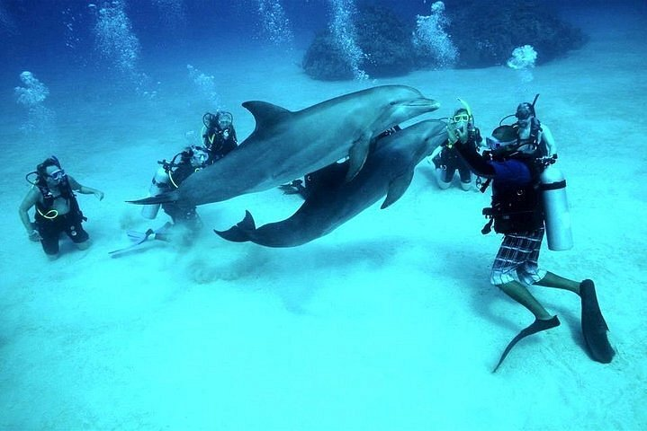
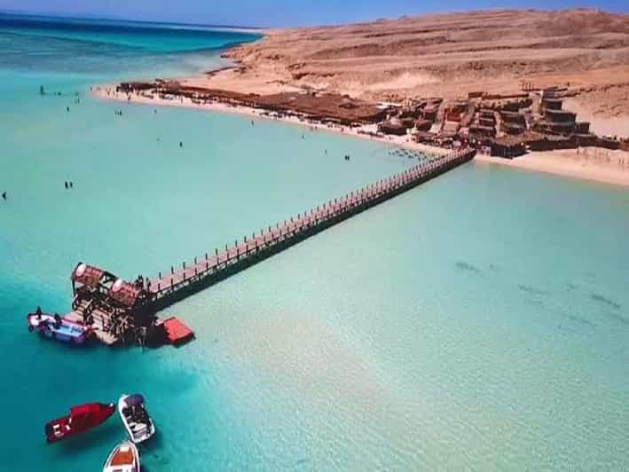
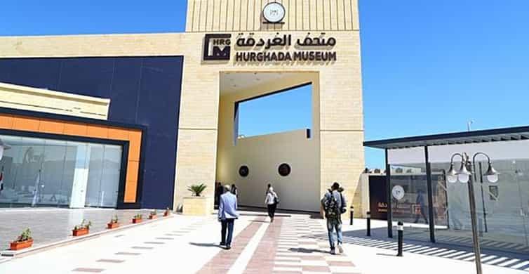

Plongée sous-marine

La station balnéaire est reconnue pour ses sublimes spots où la
richesse des fonds marins est indéniable. C'est d'ailleurs
l'activité incontournable à faire à Hurghada ! La beauté des
profondeurs, les multiples poissons colorés, les coraux, venez
découvrir tout cela lors d'une excursion à la journée. Vous pourrez
alors voguer sur la mer Rouge, jusqu'à effectuer un premier arrêt.
Aller à Orange Bay sur les Îles Giftoun

Le littoral d'Hurghada est doté de petits coins paradisiaques, dont
Orange Bay, au sud des îles Giftoun. C'est un immense complexe
balnéaire localisé dans la mer Rouge, près des côtes d'Hurghada. Il
existe d'ailleurs une excursion permettant de profiter du lieu,
agrémentée d'activités nautiques comme du snorkeling ou de la bouée
tractée. C'est à faire à Hurghada ! Durant le trajet aller, vous
pourrez admirer le paysage, avant de plonger dans l'eau cristalline
pour faire du snorkeling.
Visiter le musée d'Hurghada

L'Hurghada Museum, bien que légèrement excentré, permet d'apporter
une touche culturelle à un séjour orienté farniente. Ouvert
récemment, il propose plus de 2000 pièces de collection. Si vous ne
savez que faire en fin de séjour, c'est une bonne visite à faire à
Hurghada pour découvrir un pan de l'histoire du pays. Vous pourrez
déambuler à travers des objets remontant à plusieurs millénaires.
Admirez ces vitrines recelant des merveilles ancestrales.